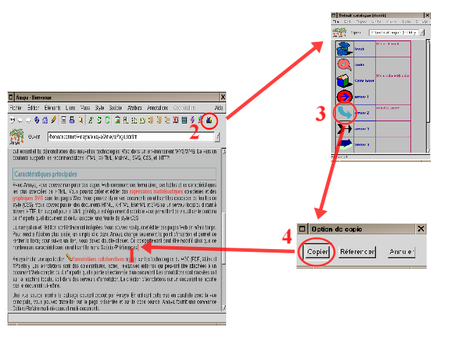
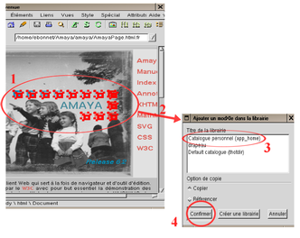
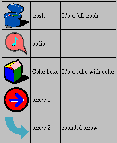
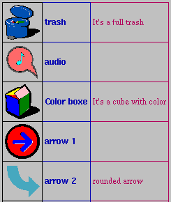

|
|
Amaya enables you to include vector graphics in Web pages, following the Scalable Vector Graphics (SVG) specification.
Amaya handles SVG elements as structured components, in the same way as HTML elements. Therefore, you can manipulate SVG graphics in the same way you manipulate other parts of HTML documents.
All editing commands provided by Amaya for handling text are also available for handling graphics. In addition, Amaya includes some additional commands for entering SVG elements.
To create a new SVG element in a document, move the insertion point to the
position where you want to insert it, and then click the
Graphics button. The Graphics button ( ) displays a palette that
stays on the screen until you click Done on the palette.
) displays a palette that
stays on the screen until you click Done on the palette.
The available graphics elements are:
line in SVG,
rect in SVG with no rx or
ry attributes,
rect in SVG,
circle in SVG,
ellipse in SVG,
polyline in SVG,
polygon in SVG,
path in SVG,
path in SVG,
foreignObject in SVG,
text in SVG
When you select a shape in the palette and the selection is in the HTML structure of the document, Amaya creates a new SVG element just at the beginning of the current selection and inserts the selected shape into this new SVG. Amaya generates SVG drawings as blocks, between paragraphs. To display a drawing inline, you must create it between paragraphs then edit the source code to move it.
When the current selected element is a SVG element, the new shape is added to the current SVG drawing. The new shape is added after and can overlap previous shapes.
The creation of a shape requires direct interaction:
You can insert an image within a SVG drawing. Choose Image from the XHTML menu or click the Insert Image button from the button bar and proceed in the same way as in HTML.
To insert a mathematical expression into a SVG drawing, click the
Math palette when the selection is within an SVG. Amaya will
generate a SVG foreignObject to embed the MathML markup.
After you have created a new SVG graphic, you can move the graphic somewhere else within the document:
To move the graphic directly using the keyboard
Control key and click the mouse. This will
highlight the image map area.Control key but continue to hold down the
mouse button. Use the mouse to move the highlighted graphic to its new
location.To move the graphic by editing the attributes
With Amaya, you can paint (fill or stroke) SVG graphic elements with a single color. The default fill color is black and the default stroke color is transparent, but you can change these values.
There are two ways to change the default fill and stroke value: by editing the SVG attributes from the Attributes menu, or by editing the SVG attribute style with CSS properties
To edit the SVG attributes:
Note: You can use either a hexidecimal number for colors, or use a specific basic color names such as black, white, blue, green, red, pink, purple, violet or yellow.
To edit the SVG attribute style with CSS properties:
fill property.
Note: SVG text is considered as a graphic shape, so the fill property paints the character contents and the stroke property paints the character border. Amaya applies the fill property to characters, but not the stroke property. Therefore, a click with the left mouse button has no immediate effect, while a click with the middle or right mouse button paints the text element.
After you have created a new SVG graphic, you can resize the graphic.
To resize the graphic directly using the keyboard
Control key and right-click the mouse. This will
highlight the image map area.Control key but continue to hold down the
right mouse button. Use the mouse to change the size of the highlighted
graphic.To resize the graphic by editing the attributes

To paste a SVG library element in a document you have to:
 )
displays a document which contains library graphic elements.
)
displays a document which contains library graphic elements.
To add a SVG elements in a library you have to:
Control key "l" Control key "a" (like
"l"ibrary "a"dd) or use menu (Ty.You can use CSS (Cascading Style Sheet) to modify SVG library presentation. SVG library is a XHTML document, so you can modify all the presentation rules of a document : table, police, image size etc... (see the CSS specification).
Here is an example of library without style.

And then you can see another example which use CSS rules.

To modify SVG library presentation, you have to look at source view and modify the header file:
.g_image concerned presentation of image column.
.g_title concerned presentation of title column.
.g_comment concerned presentation of comment column.